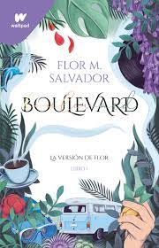
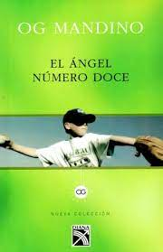
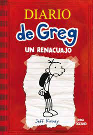

Aqui encontraras varios libros y mangas de distintos generos que te pueden gustar. :)

Boulevard, de Flor M. Salavdor
Costo:$329
Genero: Novela juvenil
Opinion personal: Es un buen libro sobre romance, pero no como los demas. Te genera tantas emociones, amas personajes, odias otros pero la experiencia al leerlo es increible.
Spy x Family, Tatsuya Endo
Costo:$129
Genero: Comedia, espionaje
Opinion personal Muy buen manga, es divertido, sobretodo por Anya y su famosa cara. Los protagonistas son un espia, una asesina y una psiquica. Al tratar de ocultar sus secretos y cumplir la mision hacen de la trama mas divertida.

El angel numero 12, Og Mandino
Costo:$208
Genero:Superacion personal, ficcion domestica
Opinion personal:Gran libro, trata algunos temas como suicidio, muerte, superacion y amor a la vida. Nos hace reflexionar ya que mientras tenemos mucho tiempo de vida alguien desearia poder vivir mas.
Diario de Greg, Jeff Kinney
Costo:$216
Genero:Novela de ficcion-comedia/humor
Opinion personal:Un libro divertido que relata la vida de un adolescente, su vida familiar tanto como escolar y como afronta las situciones que le genera la vida.
